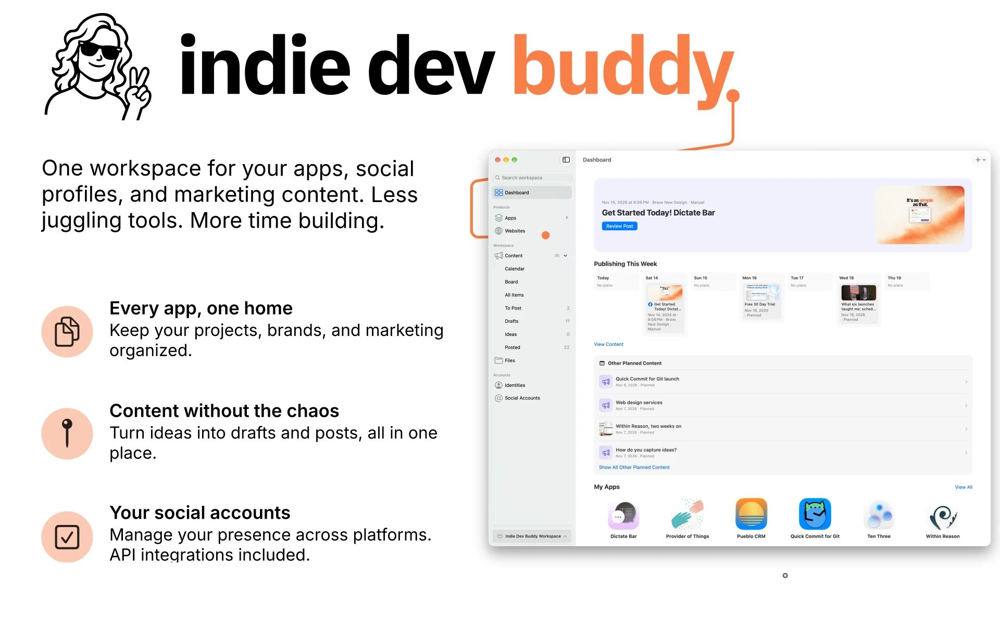
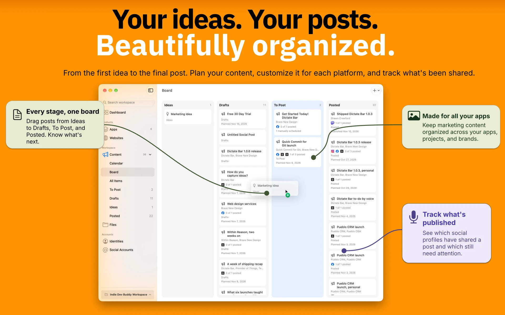

Indie Dev Buddy
A Mac app for keeping track of your apps, checking App Store releases, and writing social posts.
Download for MacRequires Apple silicon and macOS 27.2 or later.

Inside the app




Setup
To publish from the app, connect a supported social account. Credentials are stored in the macOS Keychain. Scheduled posts require Indie Dev Buddy to be running and your Mac to be awake.
App Store Connect access is optional and read-only. It uses your existing asc CLI sign-in.